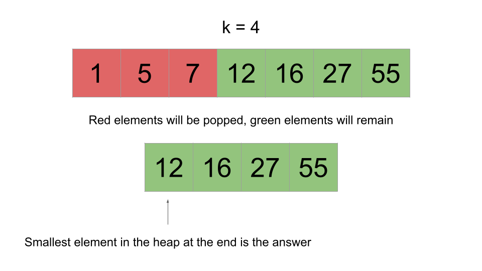
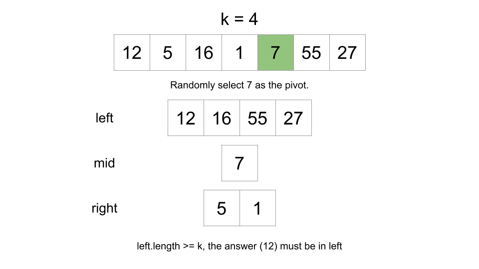
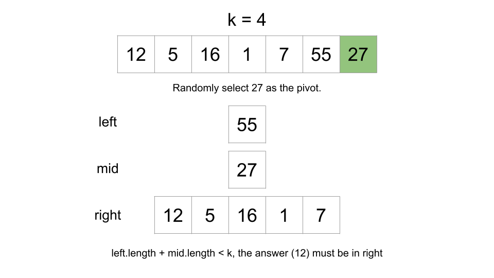
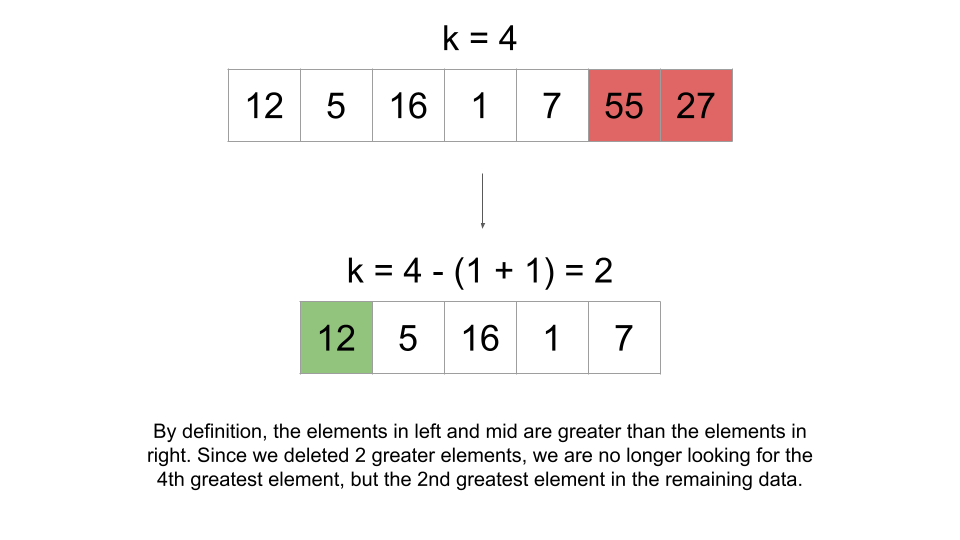

1 / 10
Intuition
Sort the array in descending order and then return the kthk^{th} element. Note that this is the "trivial" approach and if asked this question in an interview, you would be expected to come up with a better solution than this.
Implementation
Note:
kis 1-indexed, not 0-indexed. As such, we need to return the element at indexk - 1after sorting, not indexk.
Java
class Solution {
public int findKthLargest(int[] nums, int k) {
Arrays.sort(nums);
// Can't sort int[] in descending order in Java;
// Sort ascending and then return the kth element from the end
return nums[nums.length - k];
}
}
C++
class Solution {
public:
int findKthLargest(vector& nums, int k) {
sort(nums.begin(), nums.end(), greater());
return nums[k - 1];
}
};
Python3
class Solution:
def findKthLargest(self, nums, k):
nums.sort(reverse=True)
return nums[k - 1]
Complexity Analysis
Given nn
as the length of nums,
Time complexity: O(n⋅logn)O(n \cdot \log n)
Sorting nums requires O(n⋅logn)O(n \cdot \log n) time.
Space Complexity: O(logn)O(\log n) or O(n)O(n)
The space complexity of the sorting algorithm depends on the implementation of each programming language:
Intuition
A heap is a very powerful data structure that allows us to efficiently find the maximum or minimum value in a dynamic dataset.
If you are not familiar with heaps, we recommend checking out the Heap Explore Card.
The problem is asking for the kthk^{th}
largest element. Let's push all the elements onto a min-heap, but pop from the heap when the size exceeds
k. When we pop, the smallest element is removed. By limiting the heap's size to k, after
handling all elements, the heap will contain exactly the kk
largest elements from the array.

It is impossible for one of the green elements to be popped because that would imply there are at least kk
elements in the array greater than it. This is because we only pop when the heap's size exceeds k, and
popping removes the smallest element.
After we handle all the elements, we can just check the top of the heap. Because the heap is holding the kk largest elements and the top of the heap is the smallest element, the top of the heap would be the kthk^{th} largest element, which is what the problem is asking for.
Algorithm
heap.num:
num onto the heap.heap exceeds k, pop from heap.heap.Implementation
Note: C++ std::priority_queue implements a max-heap. To achieve min-heap functionality, we will multiply the values by
-1before pushing them onto the heap.
Java
class Solution {
public int findKthLargest(int[] nums, int k) {
PriorityQueue heap = new PriorityQueue<>();
for (int num: nums) {
heap.add(num);
if (heap.size() > k) {
heap.remove();
}
}
return heap.peek();
}
}
C++
class Solution {
public:
int findKthLargest(vector& nums, int k) {
priority_queue heap;
for (int num: nums) {
heap.push(-num);
if (heap.size() > k) {
heap.pop();
}
}
return -heap.top();
}
};
Python3
class Solution:
def findKthLargest(self, nums, k):
heap = []
for num in nums:
heapq.heappush(heap, num)
if len(heap) > k:
heapq.heappop(heap)
return heap[0]
Complexity Analysis
Given nn
as the length of nums,
Time complexity: O(n⋅logk)O(n \cdot \log k)
Operations on a heap cost logarithmic time relative to its size. Because our heap is limited to a size of
k, operations cost at most O(logk)O(\log k). We iterate over nums, performing
one or two heap operations at each iteration.
We iterate nn times, performing up to logk\log k work at each iteration, giving us a time complexity of O(n⋅logk)O(n \cdot \log k).
Because k≤nk \leq n, this is an improvement on the previous approach.
Space complexity: O(k)O(k)
The heap uses O(k)O(k) space.
Intuition
This is a more advanced/esoteric algorithm. Do not feel discouraged if you are unable to derive it yourself. It is highly unlikely that you would be expected to come up with this solution in an interview without any help from the interviewer.
Quickselect, also known as Hoare's selection algorithm, is an algorithm for finding the kthk^{th} smallest element in an unordered list. It is significant because it has an average runtime of O(n)O(n).
Quickselect uses the same idea as Quicksort. First, we choose a pivot index. The most common way to choose the pivot
is randomly. We partition nums into 3 sections: elements equal to the pivot, elements greater than the
pivot, and elements less than the pivot.
Next, we count the elements in each section. Let's denote the sections as follows:
left is the section with elements less than the pivotmid is the section with elements equal to the pivotright is the section with elements greater than the pivotQuickselect is normally used to find the kthk^{th}
smallest element, but we want the kthk^{th}
largest. To account for this, we will swap what left and right represent
- left will be the section with elements greater than the pivot and right will be the
section with elements less than the pivot.
If the number of elements in left is greater than or equal to k, the answer must be in
left - any other element would be less than the kthk^{th}
largest element. We restart the process in left.

If the number of elements in left and mid is less than k, the answer must be
in right - any element in left or mid would not be large enough to be the
kthk^{th}
largest element. We restart the process in right.

There's one extra step if the answer is in right. When we go to search in right, we are
effectively "deleting" the elements in left and mid (since they will never be considered
again). Because the elements in left and mid are greater than the answer, deleting them
means we must shift k. Let's say we're looking for the 8th8^{th}
greatest element, but then we delete the 4 greatest elements. In the remaining data, we would be looking for the
4th4^{th}
greatest element, not the 8th8^{th}.
Therefore, we need to subtract the length of left and mid from k when we
search in right.
We don't need to modify k when we search in left because when we search in
left, we delete elements smaller than the answer, which doesn't affect k.

If the answer is in neither left or right, it must be in mid. Since
mid only has elements equal to the pivot, the pivot must be the answer.
The easiest way to implement this repetitive process is by using recursion.
Algorithm
Note: the implementation we use here is not a standard Quickselect implementation. We will be using slightly more space (still the same complexity), but in exchange, we will be writing significantly less code.
Define a quickSelect function that takes arguments nums and k. This
function will return the kthk^{th}
greatest element in nums (the nums and k given to it as input, not
the original nums and k).
pivot.left, mid, and right as described above.k <= left.length, return quickSelect(left, k).left.length + mid.length < k, return quickSelect(right, k - left.length -
mid.length).
pivot.Call quickSelect with the original nums and k, and return the answer.
Implementation
Java
class Solution {
public int findKthLargest(int[] nums, int k) {
List list = new ArrayList<>();
for (int num: nums) {
list.add(num);
}
return quickSelect(list, k);
}
public int quickSelect(List nums, int k) {
int pivotIndex = new Random().nextInt(nums.size());
int pivot = nums.get(pivotIndex);
List left = new ArrayList<>();
List mid = new ArrayList<>();
List right = new ArrayList<>();
for (int num: nums) {
if (num > pivot) {
left.add(num);
} else if (num < pivot) {
right.add(num);
} else {
mid.add(num);
}
}
if (k <= left.size()) {
return quickSelect(left, k);
}
if (left.size() + mid.size() < k) {
return quickSelect(right, k - left.size() - mid.size());
}
return pivot;
}
}
C++
class Solution {
public:
int findKthLargest(vector& nums, int k) {
return quickSelect(nums, k);
}
int quickSelect(vector& nums, int k) {
int pivot = nums[rand() % nums.size()];
vector left;
vector mid;
vector right;
for (int num: nums) {
if (num > pivot) {
left.push_back(num);
} else if (num < pivot) {
right.push_back(num);
} else {
mid.push_back(num);
}
}
if (k <= left.size()) {
return quickSelect(left, k);
}
if (left.size() + mid.size() < k) {
return quickSelect(right, k - left.size() - mid.size());
}
return pivot;
}
};
Python3
class Solution:
def findKthLargest(self, nums, k):
def quick_select(nums, k):
pivot = random.choice(nums)
left, mid, right = [], [], []
for num in nums:
if num > pivot:
left.append(num)
elif num < pivot:
right.append(num)
else:
mid.append(num)
if k <= len(left):
return quick_select(left, k)
if len(left) + len(mid) < k:
return quick_select(right, k - len(left) - len(mid))
return pivot
return quick_select(nums, k)
Complexity Analysis
Given nn
as the length of nums,
Time complexity: O(n)O(n) on average, O(n2)O(n^2) in the worst case
Each call we make to quickSelect will cost O(n)O(n) since we need
to iterate over nums to create left, mid, and right. The
number of times we call quickSelect is dependent on how the pivots are chosen. The worst pivots
to choose are the extreme (greatest/smallest) ones because they reduce our search space by the least amount.
Because we are randomly generating pivots, we may end up calling quickSelect O(n)O(n) times,
leading to a time complexity of O(n2)O(n^2).
However, the algorithm mathematically almost
surely has a linear runtime. For any decent size of nums, the probability of the pivots
being chosen in a way that we need to call quickSelect O(n)O(n) times is
so low that we can ignore it.
On average, the size of nums will decrease by a factor of ~2 on each call. You may think: that
means we call quickSelect O(logn)O(\log n) times,
wouldn't that give us a time complexity of O(n⋅logn)O(n \cdot \log n)? Well,
each successive call to quickSelect would also be on a nums that is a factor of ~2
smaller. This recurrence can be analyzed using the master
theorem with a = 1, b = 2, k = 1:
T(n)=T(n2)+O(n)=O(n)\Large{T(n) = T(\frac{n}{2}) + O(n)} = O(n)
Space complexity: O(n)O(n)
We need O(n)O(n) space to
create left, mid, and right. Other implementations of Quickselect can
avoid creating these three in memory, but in the worst-case scenario, those implementations would still
require O(n)O(n) space for
the recursion call stack.
Bonus
When we randomly choose pivots, Quickselect has a worst-case scenario time complexity of O(n2)O(n^2).
By using the median of medians algorithm, we can improve to a worst-case scenario time complexity of O(n)O(n).
This approach is way out of scope for an interview, and practically it isn't even worth implementing because there is a large constant factor. As stated above, the random pivot approach will yield a linear runtime with mathematical certainty, so in all practical scenarios, it is sufficient.
The median of medians approach should only be appreciated for its theoretical beauty. Those who are interested can read more using the link above.
Intuition
Counting sort is a non-comparison sorting algorithm. It can be used to sort an array of positive integers.
In this approach, we will sort the input using a slightly modified counting sort, and then return the kthk^{th} element from the end (just like in the first approach).
Here is how we will sort the array:
maxValue in the array. Create an array count with size maxValue
+ 1.
num, increment
count[num].
count represents a number. Create a new
array sortedArr and iterate over count. For each index num, add count[num]
copies of num to sortedArr. Because we iterate over the indices in sorted order, we
will also add elements to sortedArr in sorted order.
The following animation demonstrates this process:
There is one problem: as we are associating indices with numbers, this algorithm will not work if negative numbers are in the input. The constraints state that negative numbers can be in the input, so we need to account for this.
Let's also find minValue, the minimum value in the array. Instead of count having a size of
maxValue + 1, we will make it have a size of maxValue - minValue + 1 (if minValue
< 0, then this will appropriately increase the size of count).
Now, we can just apply an offset of minValue when mapping numbers to indices and vice-versa. When we
populate count, given a num we will increment count[num - minValue]. count[num]
will represent the frequency of num + minValue.
One more small optimization
Since we don't actually need to sort the array but only need to return the kthk^{th}
largest value, we will iterate over the indices of count in reverse order (get the larger numbers
first). At each number, we will decrement k (or a variable we initialize as remain = k to
avoid modifying the input) by the frequency. If remain <= 0, we can return the current number. With
this optimization, we don't need to create sortedArr, saving us O(n)O(n) space.
Algorithm
maxValue and minValue of nums.count, an array of size maxValue - minValue + 1.nums. For each num, increment count[num - minValue].remain = k and iterate over the indices of count backward. For each index num:
num from remain: remain -= count[num].
remain <= 0, return the number that the current index represents: num +
minValue.
Implementation
Java
class Solution {
public int findKthLargest(int[] nums, int k) {
int minValue = Integer.MAX_VALUE;
int maxValue = Integer.MIN_VALUE;
for (int num: nums) {
minValue = Math.min(minValue, num);
maxValue = Math.max(maxValue, num);
}
int[] count = new int[maxValue - minValue + 1];
for (int num: nums) {
count[num - minValue]++;
}
int remain = k;
for (int num = count.length - 1; num >= 0; num--) {
remain -= count[num];
if (remain <= 0) {
return num + minValue;
}
}
return -1;
}
}
C++
class Solution {
public:
int findKthLargest(vector& nums, int k) {
int minValue = INT_MAX;
int maxValue = INT_MIN;
for (int num: nums) {
minValue = min(minValue, num);
maxValue = max(maxValue, num);
}
vector count(maxValue - minValue + 1);
for (int num: nums) {
count[num - minValue]++;
}
int remain = k;
for (int num = count.size() - 1; num >= 0; num--) {
remain -= count[num];
if (remain <= 0) {
return num + minValue;
}
}
return -1;
}
};
Python3
class Solution:
def findKthLargest(self, nums: List[int], k: int) -> int:
min_value = min(nums)
max_value = max(nums)
count = [0] * (max_value - min_value + 1)
for num in nums:
count[num - min_value] += 1
remain = k
for num in range(len(count) -1, -1, -1):
remain -= count[num]
if remain <= 0:
return num + min_value
return -1
Complexity Analysis
Given nn
as the length of nums and mm as maxValue - minValue,
Time complexity: O(n+m)O(n + m)
We first find maxValue and minValue, which costs O(n)O(n).
Next, we initialize count, which costs O(m)O(m).
Next, we populate count, which costs O(n)O(n).
Finally, we iterate over the indices of count, which costs up to O(m)O(m).
Space complexity: O(m)O(m)
We create an array count with size O(m)O(m).